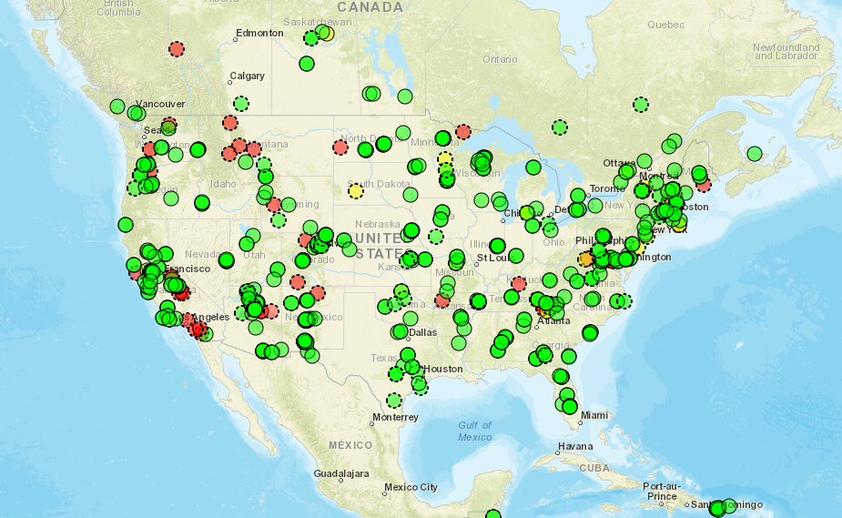
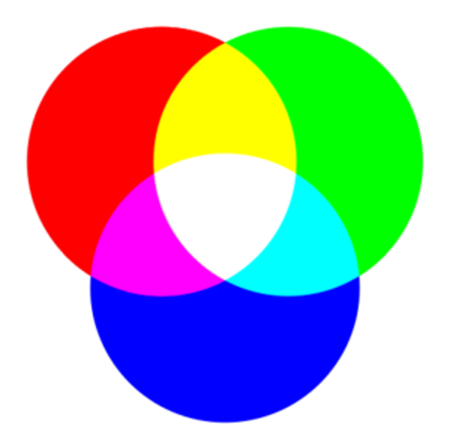
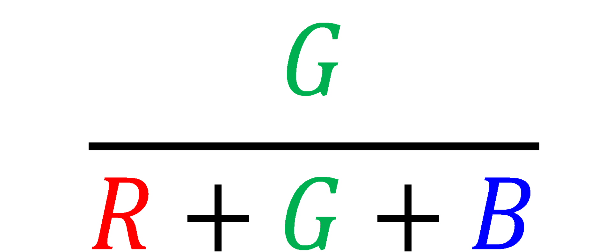
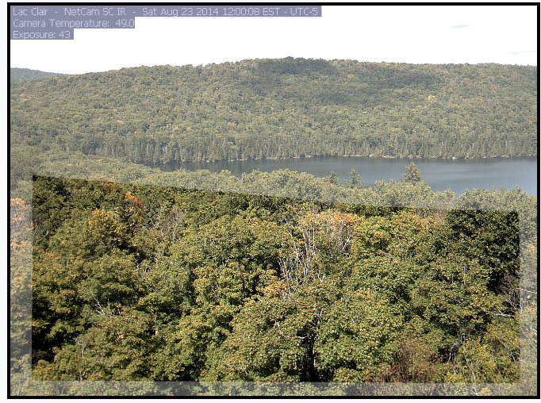
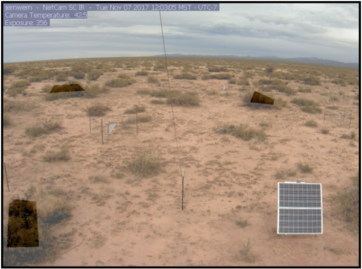
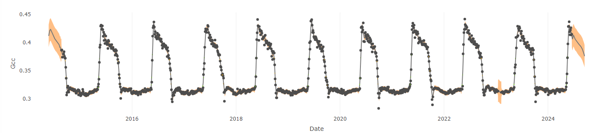

MEFA PhenoCam Activity
Explore PhenoCam Data
Created by Alison Post (July 2024)
Some code adapted from the 2020 NEON Tutorial by Bijan Seyednasrollah
Introduction to PhenoCam
Established in 2008, the PhenoCam Network is a collection of >700 digital cameras that take regular (~ every 30 min) pictures of ecosystem canopies around the world. The name PhenoCam comes from the combination of the words “phenology” and “camera”, because the images are an easy and effective way to study the phenology, or the timing of seasonal changes, of vegetation across diverse ecosystems. The images are available in near-real time to view on the PhenoCam website, and can also be downloaded through the phenocamapi R package, which we’ll cover in this tutorial. There are currently over 60 million images available!


Quantifying Greenness
Beyond being pretty pictures, PhenoCam images also provide a quantitative way to track vegetation phenology by measuring the intensity of canopy greenness. Digital images are stored as three different color channels - red, green, and blue (RGB) - which are the primary colors of light, and combine in different ratios to create all the visible colors in a photograph. Old-style TVs use this same method, as does your smartphone.

Each digital pixel has a numerical value for each color channel (RGB) that represents its intensity. We can use these values to quantify the relative intensity of green compared to the overall brightness of the image. We call this the Green Chromatic Coordinate (GCC) and calculate it using the equation below.

However, since PhenoCam images usually capture other things besides just the vegetation canopy (e.g., sky, ground, roads, buildings), each site has established portions of the image, or regions of interest (ROIs), that are analyzed for greenness. For example, at this forested site in Canada (lacclair), only the trees in the foreground are included in the GCC calculation:

And at this shrub site, only the shrub plants are included in the ROI and bare ground is excluded.

When GCC is calculated over a long time period at a site, a timeseries of vegetation greenness can be created. Below is the GCC timeseries for the “laccair” forest site shown above over the past 9 years. Notice the clear seasonal cycle of vegetation green-up in the spring followed by leaf color change and senescence (brown-down/death) in autumn.

Seasonal Transition Dates
These GCC timeseries can be used to extract seasonal transition dates across the years. For example, to determine the timing of spring green-up, we can use the amplitude (height) of each annual peak to determine when (what day of the year) vegetation at the site has reached either 10%, 25%, or 50% of its maximum greenness. We consider this to be the start of spring green-up. We use a similar method to extract the start of autumn brown-down.

Over a long time period, the timing of seasonal transition dates can be used to track shifts in vegetation phenology, such as with climate change. This dataset can also be used to determine which environmental and biologic factors (e.g., temperature, rainfall, sunlight) influence the timing of spring leaf-out and autumn color changes.

Your turn!
Thanks for learning about PhenoCam. Now you’ll have the chance to access images and data from a PhenoCam site of your choosing following the tutorial below!
Accessing PhenoCam Data
We’ll be using the “phenocamapi” R package to directly download PhenoCam data. An API is an application programming interface (API), which is a way for two or more applications/computers to talk with one another. In this case, it allows us to directly access data from the PhenoCam database.
Then, you’ll choose a site to view some images and download greenness data. Finally, you’ll create a gif (short movie) of your site through time.
First, we need to open the required packages. A package is a collection of functions/tools to complete a desired task. For example, you need a certain set of tools to build a birdhouse, but a different set of tools to bake a cake. In this case, the “phenocamapi” and “phenocamr” packages have the tools to interact with and download phenocam data. The other packages listed below assist with visualization and formatting.
#| echo: false
#| output: false
install.packages(
'phenocamr', lib=.libPaths()[1],
repos = "http://cran.us.r-project.org")
remotes::install_github('PhenoCamNetwork/phenocamapi')library(phenocamapi)
library(phenocamr)
library(jpeg)
library(purrr)
library(magick)
library(lubridate)
library(ggplot2)
library(pals)
library(maps)
library(plotly)Next, indicate a location (file path) where you want the PhenoCam images to save. For this workshop, we’ll create a new file within GitHub Codespaces called “pheno_images”.
In the future, if you’re using R Studio locally on your computer, you can enter a local directory for your computer instead (e.g., “C:/Users/alison/Desktop/pheno_images”). Make sure to use forward slashes (if using Windows, you’ll have to switch from the default backslashes to forward slashes).
# Designate directory (file path)
dir = file.path('.', 'pheno_images')
# Create test_images folder
dir.create(dir)
# View directory
dirFirst, we’ll download a table to see all the available PhenoCam sites and associated metadata. For example, each entry lists a site’s geographic coordinates, date of first and last image, primary vegetation type (see table below for abbreviations), and mean annual temperature and precipitation, among other things.
Vegetation types:
| Abbreviation | Vegetation Type |
|---|---|
| AG | Agriculture |
| DB | Deciduous Broadleaf |
| EB | Evergreen Broadleaf |
| EN | Evergreen Needleleaf |
| DN | Deciduous Needleleaf |
| GR | Grassland |
| MX | Mixed Forest |
| NV | Non-vegetated |
| SH | Shrub |
| TN | Tundra |
| UN | Understory |
| WL | Wetland |
# List metadata of all sites
sitelist_table <- get_phenos()
# View table and available metadata (column names)
View(sitelist_table)
colnames(sitelist_table)You can filter the table by any of the available attributes (column names). For example, I created a subset of only grasslands (GR) sites below.
# Create a subset of only grassland sites
GR_sites <- subset(sitelist_table, primary_veg_type == "GR")
# View the first few grassland entries and entire table
View(GR_sites)Challenge: Can you subset the sitelist_table by a different primary vegetation type? How about by a different variable (table column)? Use the code cell below.
Create a Map of the PhenoCam Sites
Now, we’ll create an interactive map to view all the PhenoCam sites colored by their primary vegetation type. First, using our “sitelist_table” that we downloaded above, we filter out any sites for which a primary vegetation type isn’t listed or an “NA” is entered. We’ll call this new data table “sitelist_table2”.
# Remove sites with NA and empty cells for primary_veg_type
sitelist_table2 <- sitelist_table[!(is.na(sitelist_table$primary_veg_typ) | sitelist_table$primary_veg_typ==""), ]Then, we’ll create a static map of the PhenoCam sites using their latitude and longitude (included in “sitelist_table2”). We’ll overlay this onto a basemap of the world and US states.
# Download basemaps of the world and US states
world_map <- map_data("world")
state_map <- map_data("state")
## Create map of sites
Site_map <- ggplot() +
# Add world map
geom_polygon(data = world_map, aes(x = long, y = lat, group = group),
fill = "white", color = "black") +
# Add state map
geom_polygon(data = state_map, aes(x = long, y = lat, group = group),
fill = NA, color = "black") +
# Add PhenoCam sites as points
geom_point(data = sitelist_table2, aes(x = lon, y = lat,
color = primary_veg_type,
text = paste("Site:", site)), size = 3) +
# Choose legend colors
scale_color_manual(values=as.vector(trubetskoy(11))) +
# Add title and labels
labs(title = "PhenoCam Sites by Vegetation Type", x = "Longitude",
y = "Latitude", color = "Primary Veg Type") +
# Indicate map theme (general appearance)
theme_minimal() +
# Center title and increase font size
theme(plot.title = element_text(hjust = 0.5, size = 20))
# View map
Site_mapChallenge: Can you change the title of the map? Make the change and re-run the code cell above.
Let’s make the map interactive! You can hover over sites to see their details, draw a box around a specific area to zoom into the region, and click on various legend entries to toggle them on or off. Double click on the map to zoom back out.
# Make map interactive
ggplotly(Site_map)Download & Plot Canopy Greenness
Now, let’s view some PhenoCam images and greenness data. Choose a site to explore, and enter the site name and relevant information in the cell below. For example, I chose the site “lacclair”, which represents a deciduous broadleaf (“DB”) vegetation type, and I chose to look at images from the year 2022. You’ll also need to specify which region of interest (ROI) to use for your site. Recall that some sites have multiple ROIs, each with a unique ID number. You can view the possible ROIs for your site on the PhenoCam website.
# Choose site to explore
# Enter name exactly as it appears in the table/on the website
site_name = "lacclair"
# Indicate vegetation type (listed on site page)
veg = "DB"
# Choose data year (for downloading images later)
year = 2022
# Indicate ROI ID
ROI = 1000
# View the objects to make sure correct
site_name
veg
year
ROIFirst, we’ll download canopy greenness (GCC = green chromatic coordinate) timeseries data for your chosen site. The GCC data are already condensed down to 1-day and 3-day data products (type = ‘3day’ or ‘1day’). See Richardson et al. (2018) for more information about PhenoCam data processing.
# Download GCC timeseries
GCC_timeseries <- get_pheno_ts(site = site_name,
vegType = veg,
roiID = ROI,
type = '3day')
# View table and available data (column names)
View(GCC_timeseries)
colnames(GCC_timeseries)Now, we’ll plot the GCC timeseries to see how canopy greenness changes over time at your chosen site. From the “GCC_timeseries” table, we’ll plot the variable called “gcc_90”, which corresponds to the 90th percentile of GCC values across the 3-day window within the designated ROI. Using the 90th percentile (rather than the mean) reduces the influence of changing weather and brightness across the images. See Richardson et al. (2018) for more details on data products and processing.
# Put date into date format
GCC_timeseries[,date:=as.Date(date)]
# Adjust plot area margins
par(mar=c(5, 6, 4, 2))
# Create line plot
plot(GCC_timeseries$date, GCC_timeseries$gcc_90,
# Choose line color & type
col = "darkgreen", type = "b",
# Change font size
cex = 1.5, cex.lab = 2, cex.axis = 2, cex.main = 3,
# Add axis labels
xlab = "Date", ylab = "GCC",
# Add title
main = paste0(site_name, ": ", "Canopy Greenness Timeseries"))
Note: Since the plot isn’t saved as an object, it only appears in the built-in plot viewer for R. However, you can right click on the plot to copy and paste it elsewhere. If you accidentally close a plot and want to see it again, just re-run the code cell that created it.
Explore Seasonal Transition Dates
We can also download and plot the 50% seasonal transition dates (spring green-up and fall brown-down) for your site. We’ll use another package called “phenocamr” to download the transition dates.
# Download csv files of (1) GCC timeseries and (2) transition dates
# They will save in your designated directory (dir)
download_phenocam(site = site_name,
veg_type = veg,
frequency = 3,
phenophase = TRUE,
out_dir = dir)
# Read in the transition date csv file:
# Designate file location
trans_dates_path <- paste0(dir, "/", site_name, "_", veg, "_", ROI, "_3day_transition_dates.csv")
#Read in file
trans_dates <- read.table(trans_dates_path,
header = TRUE,
sep = ",")
#View file
View(trans_dates)Now we’ll plot the transition dates on the GCC timeseries.
# Pull out transition dates from the trans_dates table
# Select the rising (spring dates) for 50% threshold of Gcc 90
td_rise <- trans_dates[trans_dates$direction == "rising" & trans_dates$gcc_value == "gcc_90",]
# Select the falling (fall dates) for 50% threshold of Gcc 90
td_fall <- trans_dates[trans_dates$direction == "falling" & trans_dates$gcc_value == "gcc_90",]
# As above, create a simple line graph of the Green Chromatic Coordinate (GCC)
# Plot- this time use "type = 1" to create a smooth line graph
plot(GCC_timeseries$date, GCC_timeseries$gcc_90,
col = "black", type = "l",
cex = 2, cex.lab = 2, cex.axis = 2, cex.main = 3,
xlab = 'Date', ylab = 'GCC',
main = paste0(site_name, ': ', 'Seasonal Transition Dates'))
# Add points to show transition dates:
# Spring green-up
points(x = as.Date(td_rise$transition_50, origin = "1970-01-01"),
y = td_rise$threshold_50,
pch = 19, cex = 2,
col = "green")
# Fall brown-down
points(x = as.Date(td_fall$transition_50, origin = "1970-01-01"),
y = td_fall$threshold_50,
pch = 19, cex = 2,
col = "brown")Now, let’s explore the variability of seasonal transition dates throughout the available data years. This works best if you chose a site with a longer timeseries. We’ll first convert the transition dates into a “day-of-year” (DOY) format (e.g., Jan 1 = DOY 1, Jan 2 = DOY 2, etc.), and then plot those by year.
# Convert green-up dates to date format and then DOY
td_spring_dates <- as.Date(td_rise$transition_50,format='%Y-%m-%d')
td_spring_DOY <- lubridate::yday(td_spring_dates)
# Convert brown-down dates to date format and then DOY
td_fall_dates <- as.Date(td_fall$transition_50,format='%Y-%m-%d')
td_fall_DOY <- lubridate::yday(td_fall_dates)
# Extract spring data years
years_spr <- as.numeric(format(td_spring_dates,'%Y'))
# Create table of years and spring transition dates
trans_table_spring <- data.frame(years_spr, td_spring_DOY)
# Plot spring green-up dates
plot(trans_table_spring[,1],trans_table_spring[,2],
type = "b", col = "darkgreen",
cex = 2, cex.lab = 2, cex.axis = 2, cex.main = 3,
xlab = 'Year', ylab = 'Spring Transition Date (DOY)',
main = paste0(site_name, ': ', 'Date of Spring Onset Through the Years'))And now plot the fall brown-down transition dates.
# Extract fall data years
years_fall <- as.numeric(format(td_fall_dates,'%Y'))
# Create table of years and fall transition dates
trans_table_fall <- data.frame(years_fall, td_fall_DOY)
# Plot fall brown-down dates
plot(trans_table_fall[,1],trans_table_fall[,2],
type = "b", col = "brown",
cex = 2, cex.lab = 2, cex.axis = 2, cex.main = 3,
xlab = 'Year', ylab = 'Autumn Transition Date (DOY)',
main = paste0(site_name, ': ', 'Date of Autumn Onset Through the Years'))As you can see, there is a decent amount of year-to-year variability in when a site greens up (spring) or browns down (fall), directly impacting the total length of the growing sesason. This variability is largely due to differences in weather, such as precipitation and temperature. Climate change is also shifting seasonal transition dates, which can impact many other variables, such as plant-animal interactions and ecosystem carbon and water storage.
Download PhenoCam Images
Next, we’ll download some photos from your chosen site. Images are typically taken every 30 minutes, but for simplicity, we’ll just download 1 image per month in order to visualize phenology changes. This code downloads the midday (~12 pm) image for the 15th day (“days = 15”) of each month (“months = 1:12”) for the year you chose above. The images will appear in the folder you designated above (dir).
# Download PhenoCam images
download_midday_images(site = site_name,
y = year,
months = 1:12,
days = 15,
download_dir = dir)Now, we’ll use those images to create a photo collage that displays changes in phenology throughout the year. First, we’ll set it up and check that it’s working correctly. You should have 12 images (1 per month), so when you run the code below, “n” should equal 12. If not, look in your “dir” (pheno_images) folder and make sure it only includes images for a single PhenoCam site. If you have more than 12, right click on the images you don’t want and delete them from the folder.
# Isolate images from your designated directory
# Pics are jpeg format
middays_path <- dir(dir, pattern = "*.jpg", full.names = TRUE)
# See a sample of image directory paths to make sure it worked
head(middays_path)
# Determine number of images (should be 12, 1 per month)
n <- length(middays_path)
nThen we’ll create the layout.
# Set up image layout (4 rows & 3 columns)
par(mar= c(0,0,0,0), mfrow=c(4,3), oma=c(0,23,3,23))
# Create monthly image layout with labels (this can take 1-2 min)
for(i in 1:n){
img <- jpeg::readJPEG(middays_path[i])
plot(0:1,0:1, type='n', axes= FALSE, xlab= '', ylab = '')
rasterImage(img, 0, 0, 1, 1)
mtext(month.name[i], line = -2)
}
# Add title (feel free to edit the title below)
mtext(paste0(site_name, ': ', 'Canopy Greenness Through the Months'), font = 2, cex = 1.8, outer = TRUE)Finally, we’ll use those same images to create a gif that shows changes in phenology over time. This is great to use in presentations to visualize seasonal transitions!
# Make timelapse gif of images
gif <- list.files(path = dir, pattern = "*.jpg", full.names = T) %>%
purrr::map(image_read) %>%
image_join() %>%
# Add text to each image - you can change the size, location, color below
image_annotate(paste(site_name,"Jan-Dec", year),
location = "+900+30",
size = 35,
color = "black") %>%
# Frames per second (higher number = faster, lower number = slower)
image_animate(fps=0.5) %>%
# Designate file name & save to your directory
image_write(paste0(dir,"/MonthlyGreenness_gif.gif"))
# The gif will be saved to the directory you indicated at the beginning
# You can check the directory path below
dirAs an example, here’s the gif I made for the lacclair site. Your gif will be saved to the directory you indicated at the beginning (dir). If you want to save it, right click on the gif file name and select “download”.
 /
/
Explore another site!
Now try this exercise with another PhenoCam site. Perhaps choose a different ecosystem type. Think about how seasonal greenness patterns differ between sites. What do you think causes these differences?
To do this, edit the cell near the beginning where you assign the site name, vegetation type, year, and ROI (in the “Download & Plot Canopy Greenness” section). Be sure to re-run that cell and all cells below it in sequential order.
**But before trying a new site, run this code cell to re-set your plotting parameters and delete all the downloaded files in your “pheno_images” (dir) folder. Be sure to download your gif first if you want to save a copy.
# Reset plotting parameters
dev.off()
# List all files in "pheno_images"
f <- list.files(dir, include.dirs = F, full.names = T, recursive = T)
# Remove the files
file.remove(f)Thank you
Thanks for exploring PhenoCam data. Hopefully, you have a stronger appreciation for phenology now!